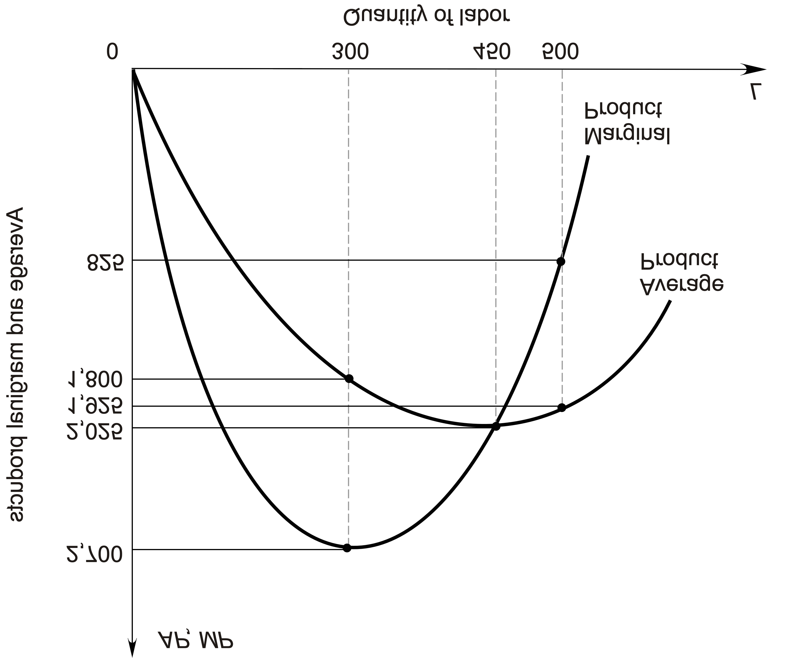
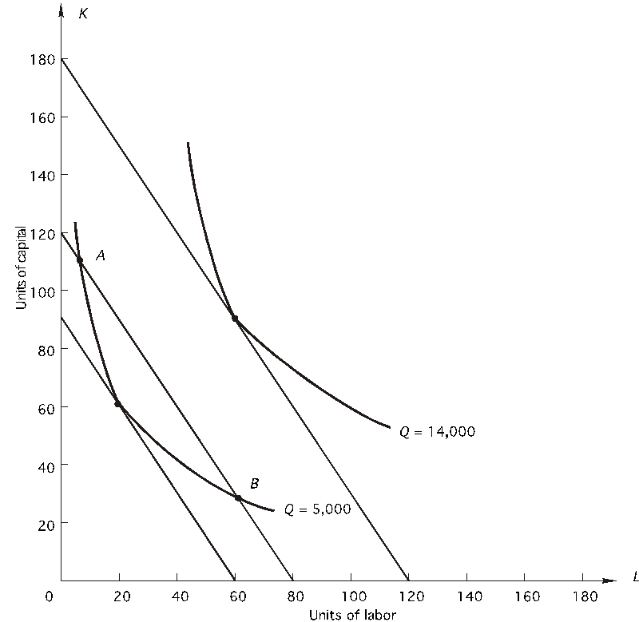

شرح تفصيلي: تكاليف الإنتاج في المدى القصير (Short Run Costs)
في الملف ده، هنمسك موضوع التكاليف ونفصصه حتة حتة. الموضوع مش مجرد حفظ قوانين، ده "فن إدارة الفلوس" جوه المصنع. إزاي أطلع إنتاج بأقل مصاريف؟ وإمتى أزود عمال وإمتى أطردهم؟ تعالوا نشوف.
الجزء الأول: نظرية الإنتاج (Production)
Slide 1: العنوان

المحتوى: Production and Cost in the Short Run
الشرح: هنتكلم النهاردة عن العلاقة بين الحاجات اللي بتدخل المصنع (مدخلات) والحاجات اللي بتخرج منه (منتجات)، وإزاي ده بيترجم لفلوس (تكاليف).
Slide 2: يعني إيه إنتاج أصلاً؟

1. دالة الإنتاج (Production Function):
- تخيل المصنع كأنه "خلاط".
- بتحط فيه (عمال + مكن + خامات). دي اسمها مدخلات (Inputs).
- بتشغل الخلاط بـ "تكنولوجيا معينة".
- بيطلعلك عصير (منتج نهائي). ده اسمه مخرجات (Output).
- دالة الإنتاج بتقولك: "لو حطيت 5 عمال و 2 مكنة، هيطلعلك كام وحدة بالضبط؟". هي أقصى كمية ممكنة.
2. نوعين من الكفاءة (مهم جداً الفرق بينهم):
- كفاءة فنية (Technical Efficiency): دي شغل "مهندسين".
- إنك تطلع أكبر كمية إنتاج ممكنة من غير ما تهدر خامات أو تضيع وقت عمال. يعني "بتعصر" الموارد اللي معاك.
- كفاءة اقتصادية (Economic Efficiency): دي شغل "مديرين".
- إنك تختار الطريقة اللي تطلع الإنتاج المطلوب بأرخص تكلفة.
- ممكن تكون طريقة "فنية" ممتازة بس مكلفة جداً (مثلاً تستخدم روبوتات غالية)، فالمدير يرفضها عشان مش "كفاءة اقتصادية".
Slide 3: أنواع المدخلات (Inputs)

عشان ننتج، محتاجين حاجات كتير. بنقسمها لنوعين أساسيين:
-
مدخلات متغيرة (Variable Input):
- دي الحاجات اللي تقدر تزودها أو تنقصها "بسرعة".
- مثال: خامات، عمال يومية، كهرباء.
- لو جالك طلبية زيادة بكرة، هتعمل إيه؟ هتطلب خامات أكتر وتجيب عمال زيادة. سهل.
-
مدخلات ثابتة (Fixed Input):
- دي الحاجات اللي "مزنوق فيها" ومش عارف تغيرها بسرعة.
- مثال: مساحة المصنع، الآلات الكبيرة، العقود طويلة الأجل.
- لو جالك طلبية زيادة بكرة، مش هتلحق تبني دور تاني في المصنع!
- نقطة مهمة: بندفع تمنها سواء اشتغلنا أو قعدنا (زي الإيجار).
-
مدخلات شبه ثابتة (Quasi-Fixed):
- دي بتدفعها لو اشتغلت (أي كمية)، بس لو قفلت خالص مش هتدفعها. (زي رخصة التشغيل).
Slide 4: الفرق بين المدى القصير والمدى الطويل

الفرق مش "وقت" بالساعة، الفرق في "المرونة":
-
المدى القصير (Short Run):
- هو الفترة اللي فيها عنصر واحد على الأقل ثابت.
- يعني إنت كمدير "مكتف". عندك مصنع بمساحة معينة ومكن معين، واللعبة الوحيدة اللي في إيدك هي "تزود أو تنقص عمال".
- في المادة دي، المدى القصير معناه (رأس المال $K$ ثابت، والعمال $L$ متغيرين).
-
المدى الطويل (Long Run):
- هو الفترة اللي "كل حاجة فيها ممكن تتغير".
- عقد الإيجار خلص، المكن قدم وهنغيره.
- هنا المدير عنده حرية كاملة يختار حجم المصنع وعدد المكن.
Slide 5: الإنتاج في المدى القصير (Total Product)

بما إننا في المدى القصير، يبقى المكن ($K$) ثابت. والعمال ($L$) هما اللي بيزيدوا.
دالة الإنتاج بتبقى كده: $$ Q = f(L, \bar{K}) $$ (البار فوق الـ K معناه إنه ثابت).
مصطلحين لازم نفهمهم:
-
الناتج المتوسط (AP - Average Product):
- متوسط إنتاجية العامل الواحد.
- المعادلة: الإنتاج الكلي / عدد العمال ($AP = Q / L$).
- بيقولنا "كفاءة العمال في المتوسط إيه".
-
الناتج الحدي (MP - Marginal Product):
- ده أهم مصطلح في الاقتصاد.
- بيقولك: "العامل الأخير (رقم 5 مثلاً) اللي إحنا لسه معينينه ده، زود الإنتاج بكام؟".
- المعادلة: التغير في الإنتاج / التغير في العمال ($MP = \Delta Q / \Delta L$).
Slide 6: جدول الإنتاج (مثال بالأرقام)

بص على الجدول ده وركز في الأرقام:
- عند 0 عمال: الإنتاج 0 (طبيعي).
- عند 1 عامل: أنتج 10 قطع.
- عند 2 عمال: الإنتاج بقى 30. (زودنا 20 قطعة! ليه؟ عشان العمال ابتدوا يساعدوا بعض).
- عند 3 عمال: الإنتاج بقى 60. (زودنا 30 قطعة! الكفاءة بتزيد).
- عند 4 عمال: الإنتاج 80. (زدنا 20 بس... ابتدت الزحمة).
- عند 9 عمال: الإنتاج بيقل! (بقوا يخبطوا في بعض).
الملاحظة:
- الناتج الحدي (MP) بيبدأ يزيد في الأول (تخصص وتعاون)، وبعدين يوصل لقمة، وبعدين يبدأ يقل (زحمة وتناقص غلة).
Slide 7: العلاقة بين الناتج المتوسط والحدي (AP vs MP)

العلاقة دي عاملة زي "الطالب ومجموع الدرجات":
- تخيل (AP) هو "المعدل التراكمي" بتاعك (GPA).
- وتخيل (MP) هو "درجتك في المادة الجديدة".
القاعدة:
- لو جبت درجة في المادة الجديدة (MP) أعلى من معدلك (AP) -> معدلك هيزيد. ($MP > AP \rightarrow AP \uparrow$).
- لو جبت درجة في المادة الجديدة (MP) أقل من معدلك (AP) -> معدلك هيقل. ($MP < AP \rightarrow AP \downarrow$).
- لو جبت درجة نفس معدلك -> معدلك هيفضل ثابت. ($MP = AP$).
في الرسمة:
- منحنى (MP) بيقطع منحنى (AP) عند أعلى نقطة لـ (AP). دي قاعدة هندسية ثابتة.
Slide 11: ننتقل للتكاليف (Costs)

دلوقتي هنحول "الإنتاج" لـ "فلوس". المدير مايفهمش "وحدات"، يفهم "دولارات".
أنواع التكاليف:
- تكلفة ثابتة كلية (TFC): التمن اللي دفعناه في الحاجات الثابتة (المكن والإيجار). دي رقم ثابت مهما أنتجت (حتى لو الإنتاج صفر). خط مستقيم بالعرض.
- تكلفة متغيرة كلية (TVC): التمن اللي دفعناه في العمال والخامات. دي بتزيد كل ما الإنتاج يزيد (بتبدأ من الصفر).
- التكلفة الكلية (TC): مجموع الاتنين ($TC = TFC + TVC$).
Slide 12: جدول التكاليف

لاحظ إن:
- $TFC$ ثابتة عند 100 دولار طول الوقت.
- $TVC$ بتزيد مع الإنتاج.
- $TC$ هي مجموعهم، وبتبدأ من 100 (مش من الصفر) عشان التكلفة الثابتة.
Slide 14: التكلفة المتوسطة والحدية (Average & Marginal Costs)

زي ما قسمنا الإنتاج لـ (AP و MP)، هنقسم التكاليف:
-
متوسط التكلفة الثابتة ($AFC$):
- نصيب القطعة الواحدة من الإيجار.
- $AFC = TFC / Q$.
- الرقم ده بيقل دايماً كل ما تنتج أكتر (بتوزع الإيجار على عدد أكبر).
-
متوسط التكلفة المتغيرة ($AVC$):
- نصيب القطعة الواحدة من العمال والخامات.
- $AVC = TVC / Q$.
- بتقل في الأول وبعدين تزيد (شكل حرف U).
-
متوسط التكلفة الكلية ($ATC$):
- القطعة "واقفة عليا" بكام كله على بعضه؟
- $ATC = TC / Q$.
-
التكلفة الحدية ($SMC$ أو $MC$):
- "آخر حتة" أنتجتها، كلفتني كام زيادة؟
- دي أهم واحدة لاتخاذ القرارات (زي التسعير).
- $MC = \Delta TC / \Delta Q$.
Slide 16-18: شكل المنحنيات والعلاقات


خصائص المنحنيات (مهمة للامتحان):
- منحنى AFC: نازل على طول (بيقرّب من الصفر بس عمره ما يلمسه).
- منحنى ATC و AVC: واخدين شكل حرف U. بيقلوا في الأول (بسبب زيادة الكفاءة) وبعدين يزيدوا (بسبب الزحمة وتناقص الغلة).
- المسافة بينهم: المسافة الرأسية بين $ATC$ و $AVC$ هي نفسها $AFC$. وعشان $AFC$ بتقل، المسافة بينهم بتضيق طول ما إحنا ماشيين يمين.
- منحنى MC (المشاغب):
- عامل زي علامة "نايكي" ($\checkmark$) أو حرف U ضيق.
- بيقطع $AVC$ عند أقل نقطة ليها.
- بيقطع $ATC$ عند أقل نقطة ليها.
Slide 19-20: العلاقة العكسية بين الإنتاج والتكلفة


دي الخلاصة الفلسفية للموضوع: "التكلفة هي الوجه الآخر للإنتاجية".
- لما العامل يكون "شاطر" وإنتاجيته (MP) بتزيد... التكلفة الحدية (MC) "بتقل". (بيديك إنتاج كتير بفلوس قليلة).
- لما العامل يبدأ "يهنج" وإنتاجيته (MP) تقل... التكلفة الحدية (MC) "بتزيد". (بتدفعله نفس المرتب بس بيديك إنتاج أقل، فالقطعة بتقف عليك أغلى).
- قمة الإنتاجية ($Max MP$) = قاع التكلفة ($Min MC$).
- نفس الكلام ينطبق على المتوسطات ($AP$ عكس $AVC$).
رسالة للمدير: عايز تقلل تكاليفك؟ مالكش غير حل واحد: زود إنتاجية عمالك. دربهم، نظمهم، شجعهم. لما الـ MP يزيد، الـ MC غصب عنها هتقل.
شرح تفصيلي: تكاليف الإنتاج في المدى الطويل (Long Run Costs)
في الملف اللي فات كنا محبوسين في "المدى القصير" (المصنع مساحته ثابتة). النهاردة بقى هنفك القيود دي. في المدى الطويل، إنت كمدير "باشا". تقدر تغير حجم المصنع، تجيب مكن جديد، تغير التكنولوجيا.. كل حاجة متاحة.
الجزء الأول: الإنتاج في المدى الطويل (Long Run Production)
Slide 2: يعني إيه مدى طويل؟

المفهوم:
- في المدى الطويل، جميع المدخلات متغيرة.
- مفيش حاجة اسمها "تكلفة ثابتة" خلاص. عقد الإيجار خلص وتقدر تمشي، المكن ممكن تبيعه.
- اللعبة هنا: "أختار أنهي حجم للمصنع؟ وأجيب كام مكنة قصاد كام عامل؟".
- ده بنسميه تخطيط الآفاق (Planning Horizon).
Slide 3: منحنيات الناتج المتساوي (Isoquants)

يعني إيه Isoquant؟
- كلمة Iso يعني "متساوي"، و Quant يعني "كمية".
- المنحنى ده بيرسم كل "الخلطات" الممكنة بين (رأس المال $K$) و (العمال $L$) اللي تطلعلك نفس كمية الإنتاج.
مثال: عايز تنتج 100 عربية. ممكن تعملها بطريقتين:
- طريقة كثيفة العمالة: تجيب 100 عامل وشواكيش يشتغلوا يدوي (L كتير، K قليل).
- طريقة كثيفة رأس المال: تجيب روبوتات ومكن، و5 عمال بس يراقبوا (K كتير، L قليل).
- الحالتين هيدوك 100 عربية. الاتنين دول نقطتين على نفس "منحنى الناتج المتساوي".
خصائص المنحنى:
- نيزل لتحت (علاقة عكسية). لو قللت عمال، لازم تزود مكن عشان تعوض، والعكس.
Slide 4-5: المعدل الحدي للإحلال الفني (MRTS)


التعريف:
- هو "سعر التبديل" الفني جوه المصنع.
- "أقدر أستغنى عن كام مكنة مقابل إني أجيب عامل زيادة ويفضل الإنتاج زي ما هو؟".
-
المعادلة: $$ MRTS = \frac{MP_L}{MP_K} $$
-
(النسبة بين إنتاجية العامل لإنتاجية المكنة).
Slide 6-7: خطوط التكلفة المتساوية (Isocost Lines)


الميزانية:
- بعد ما عرفنا الطرق الفنية للإنتاج، لازم نشوف "جيبنا فيه كام".
- الخط ده بيمثل "قدرتك المالية".
-
معادلة التكلفة: $$ C = wL + rK $$ (التكلفة الكلية = أجر العامل $\times$ عدد العمال + سعر المكنة $\times$ عدد المكن).
-
أي نقطة على الخط ده بتكلف الشركة نفس المبلغ.
Slide 8-9: اختيار المزيج الأمثل (Optimal Combination)


إزاي المدير يقرر؟
- المدير عايز ينتج كمية معينة (على منحنى Isoquant) بس بأقل تكلفة ممكنة (على أدنى خط Isocost).
- الحل الهندسي: النقطة اللي بيلمسوا فيها بعض (Tangent).
الشرط الاقتصادي (قاعدة التوازن): $$ \frac{MP_L}{w} = \frac{MP_K}{r} $$
تفسير القاعدة (مهم جداً):
- الـ $MP_L / w$ معناها: "الجنيه اللي بصرفه على العمال بيجيبلي كام وحدة إنتاج؟".
- الـ $MP_K / r$ معناها: "الجنيه اللي بصرفه على المكن بيجيبلي كام وحدة إنتاج؟".
- لو العمال بيكسبوني أكتر لكل جنيه: يبقى "أرفد" شوية مكن و "أعين" عمال بدالهم.
- لو المكن بيكسبني أكتر: يبقى "أشتري" مكن وأمشي عمال.
- التوازن: لما الجنيه هنا يساوي الجنيه هنا. ساعتها بس أوقف تغيير وأثبت على الوضع ده.
Slide 10-11: مسار التوسع (Expansion Path)

- لو الشركة قررت تكبر وتزود إنتاجها، هتعمل إيه؟
- هتنتقل لنقطة توازن جديدة (بكمية أكبر وتكلفة أعلى).
- لو وصلنا نقط التوازن دي ببعض، بيطلع خط اسمه "مسار التوسع".
- ده الخريطة اللي بتمشي عليها الشركة وهي بتكبر عشان تضمن إنها دايما شغالة بأعلى كفاءة.
الجزء الثاني: عوائد السعة (Returns to Scale)
Slide 12: لما نكبر.. بيحصل إيه؟

السؤال: "لو ضاعفنا حجم المصنع (كل المدخلات $\times$ 2)، الإنتاج هيتضاعف ولا لأ؟"
عندنا 3 احتمالات:
-
تزايد عوائد السعة (Increasing Returns to Scale - IRS):
- ضاعفنا المصنع -> الإنتاج زاد أكتر من الضعف ($\times$ 3).
- دي الحالة "الجنة". كل ما تكبر، بتبقى أكفأ. (بسبب التخصص وتقسيم العمل).
- بيسموها كمان "وفورات الحجم" (Economies of Scale).
-
ثبات عوائد السعة (Constant Returns to Scale - CRS):
- ضاعفنا المصنع -> الإنتاج زاد الضعف بالضبط ($\times$ 2).
- دي الحالة الطبيعية في النص.
-
تناقص عوائد السعة (Decreasing Returns to Scale - DRS):
- ضاعفنا المصنع -> الإنتاج زاد أقل من الضعف ($\times$ 1.5).
- دي حالة "الترهل الإداري". الشركة كبرت زيادة عن اللزوم، ومبقتش عارفة تدير الموارد صح.
الجزء الثالث: التكلفة في المدى الطويل (Long Run Costs)
Slide 13-16: منحنى متوسط التكلفة (LAC)

منحنى التكلفة طويلة الأجل (Long-Run Average Cost) بياخد شكل حرف U واسع ومفرود (Flatter U-shape). ليه؟
-
الجزء النازل (شمال): Economies of Scale
- في البداية، كل ما الشركة تكبر، متوسط التكلفة بيقل.
- ليه؟ بتشتري خامات جملة، بتستخدم مكن أكبر وأسرع، العمال بيتخصصوا أكتر.
-
الجزء الطالع (يمين): Diseconomies of Scale
- لو الشركة "توحشت" وكبرت أوي أوي، متوسط التكلفة بيبدأ يزيد.
- ليه؟ البيروقراطية، صعوبة التواصل بين الإدارة والعمال، الروتين القاتل.
Slide 18: وفورات النطاق (Economies of Scope)

خد بالك من الفرق بين الاسمين:
- Scale (حجم): إنك تنتج "كتير" من نفس المنتج فترخص تكلفته. (مصنع بيبسي بينتج مليون قزازة).
- Scope (نطاق): إنك تنتج منتجات مختلفة بس بينهم صلة، فتوفر مصاريف.
- مثال: مصنع "تويوتا" بينتج عربيات ومواتير وشاحنات. بيستخدموا نفس المهندسين ونفس التكنولوجيا.
- المعادلة: $C(X, Y) < C(X) + C(Y)$.
- إنتاج (X و Y) مع بعض في شركة واحدة أرخص من إنتاج X في شركة و Y في شركة تانية.
Slide 19: العلاقة بين المدى القصير والطويل

- منحنى التكلفة الطويل (LAC) هو عبارة عن "غلاف" (Envelope Curve) بيحضن كل منحنيات المدى القصير (SAC).
- يعني منحنى LAC هو "أرخص تكلفة ممكنة" لأي حجم إنتاج، لو إنت عندك الحرية تختار حجم المصنع المناسب لإنتاج الكمية دي.
الخلاصة للمدير:
- في التخطيط للمستقبل (Long Run)، لازم تختار حجم المصنع اللي يديك "وفورات حجم" (Economies of Scale).
- حاول توصل للنقطة اللي عندها أقل متوسط تكلفة ممكن (قاع الـ LAC).
- خد بالك ماتكبرش زيادة عن اللزوم فتدخل في "تناقص العوائد".
مسائل الأسبوع 3 (Week 3 Practice Problems) - ملخص
السؤال 1 (Question 1)
المعطيات: افترض أن التكاليف الثابتة (Fixed Costs) = 20. أكمل الجدول وأجب عن الأسئلة التالية:
| الإنتاج (Output) | التكاليف المتغيرة (Variable Costs) |
|---|---|
| 1 | 10 |
| 2 | 18 |
| 3 | 30 |
| 4 | 45 |
| 5 | 65 |
الأسئلة:
- ما هي التكلفة الكلية (Total Cost) عند إنتاج 5 وحدات؟ وما هو متوسط التكلفة الكلية (ATC)؟
- ما هي التكلفة الحدية (Marginal Cost) عند إنتاج 5 وحدات؟
- كم تبلغ قيمة ATC عند أدنى مستوى لها؟ وإلى أي حجم إنتاج يقابل ذلك؟
الإجابة 1 (Answer 1)
-
التكلفة الكلية (TC): $$ TC = VC + FC $$ عند 5 وحدات، $VC = 65$ و $FC = 20$. $$ TC = 65 + 20 = 85 $$ متوسط التكلفة الكلية (ATC): $$ ATC = TC / Q = 85 / 5 = 17 $$
-
التكلفة الحدية (MC): $$ MC = \Delta TC / \Delta Q $$ عند 5 وحدات (التغير من 4 إلى 5): $$ MC = (85 - 65) / (5 - 4) = 20 $$ (ملاحظة: عند 4 وحدات، TC = 45 + 20 = 65)
-
أدنى قيمة لـ ATC: من الجدول (بعد الحسابات):
-
عند Q=1: ATC = (10+20)/1 = 30
- عند Q=2: ATC = (18+20)/2 = 19
- عند Q=3: ATC = (30+20)/3 = 16.67
- عند Q=4: ATC = (45+20)/4 = 16.25 (Minimum)
- عند Q=5: ATC = (65+20)/5 = 17 الإجابة: 16.25 عند 4 وحدات.
السؤال 2 (Question 2)
استخدم الجدول التالي للإجابة عن الأسئلة أدناه: (الجدول يوضح إجمالي الإنتاج الناتج عن مجموعات مختلفة من العمل ورأس المال)
الأسئلة:
- إذا كان رأس المال ثابتاً عند وحدة واحدة، فكم يضيف العامل الثالث إلى إجمالي الإنتاج؟
- إذا كان رأس المال ثابتاً عند وحدة واحدة، عند أي نقطة تحدث تناقص الغلة (diminishing returns)؟
- إذا كان رأس المال ثابتاً عند 4 وحدات وهناك عاملان، فما هو متوسط إنتاج العمل؟
- إذا كان العمل ثابتاً عند 3 وحدات، فكم تضيف الوحدة الثانية من رأس المال إلى إجمالي الإنتاج؟
الإجابة 2 (Answer 2)
-
الناتج الحدي للعامل الثالث (عند K=1): الإنتاج عند 3 عمال = 150. الإنتاج عند 2 عمال = 110. الزيادة = $150 - 110 = 40$ وحدة.
-
نقطة تناقص الغلة: نحسب MP لكل عامل (عند K=1):
-
العامل 1: 50
- العامل 2: $110 - 50 = 60$ (تزايد)
-
العامل 3: $150 - 110 = 40$ (تناقص) الإجابة: تبدأ عند العامل الثالث.
-
متوسط إنتاج العمل (عند K=4, L=2): من الجدول، عند 4 وحدات رأس مال و 2 عمال، الإنتاج = 390. $$ AP = Q / L = 390 / 2 = 195 $$
-
الناتج الحدي للوحدة الثانية من رأس المال (عند L=3): الإنتاج عند 2 وحدة رأس مال (و 3 عمال) = 360. الإنتاج عند 1 وحدة رأس مال (و 3 عمال) = 150. الزيادة = $360 - 150 = 210$ وحدة.
السؤال 3 (Question 3)
افترض أن العمل (المدخل المتغير الوحيد) له منحنيات الناتج المتوسط والحدي الموضحة أدناه. سعر العمل هو 1,000 دولار لكل وحدة ($w = 1000$).

الأسئلة:
- كم عدد العمال عند أدنى AVC؟ وما حجم الإنتاج المقابل؟
- كم تبلغ قيمة AVC عند أدنى مستوى لها؟
- كم عدد العمال الذي يحقق أدنى MC؟ وما حجم الإنتاج المقابل؟
- كم تبلغ قيمة MC عند أدنى مستوى لها؟
الإجابة 3 (Answer 3)
-
أدنى AVC: يحدث عند أقصى AP. من الرسم: أقصى AP عند 450 عاملاً. الإنتاج المقابل: $Q = AP \times L = 2025 \times 450 = 911,250$ وحدة.
-
قيمة أدنى AVC: $$ AVC = w / AP_{max} = 1000 / 2025 \approx 0.49 \text{ دولار} $$
-
أدنى MC: يحدث عند أقصى MP. من الرسم: أقصى MP عند 300 عامل. الإنتاج المقابل: $Q = AP \times L = 1800 \times 300 = 540,000$ وحدة. (نستخدم AP عند 300 عامل وهو 1800 تقريباً من الرسم أو المعطيات).
-
قيمة أدنى MC: $$ MC = w / MP_{max} = 1000 / 2700 \approx 0.37 \text{ دولار} $$
السؤال 4 (Question 4)
سعر رأس المال (r) هو 20 دولار.

الأسئلة:
- ما هو سعر العمل (w)؟
- ما هو المزيج الأمثل لإنتاج 5,000 وحدة بأقل تكلفة؟
- ما هي أقل تكلفة ممكنة لإنتاج 5,000 وحدة؟
- ما هي أقل تكلفة ممكنة لإنتاج 14,000 وحدة؟
- عند المزيج الأمثل لإنتاج 14,000 وحدة، ما هو MRTS؟
الإجابة 4 (Answer 4)
-
سعر العمل (w): من الرسم، خط التكلفة الأول يقطع المحور الرأسي (K) عند 90 والمحور الأفقي (L) عند 60. التكلفة الكلية للخط الأول = $90 \times 20 = 1800$. إذن $1800 = w \times 60 \Rightarrow w = 1800 / 60 = 30$ دولار.
-
المزيج الأمثل لإنتاج 5,000 وحدة: نقطة التماس لمنحنى 5000 وحدة مع خط التكلفة. من الرسم: 60 وحدة رأس مال و 20 وحدة عمل.
-
أقل تكلفة لإنتاج 5,000 وحدة: هذه النقطة تقع على خط التكلفة الأول الذي حسبنا تكلفته سابقاً. التكلفة = 1800 دولار.
-
أقل تكلفة لإنتاج 14,000 وحدة: نقطة التماس تقع على خط التكلفة الثاني (الأعلى). يقطع هذا الخط المحور الرأسي عند 180. التكلفة = $180 \times 20 = 3600$ دولار.
-
MRTS عند 14,000 وحدة: MRTS هو ميل منحنى الناتج المتساوي (القيمة المطلقة)، وهو يساوي النسبة بين أسعار المدخلات عند التوازن. $$ MRTS = w / r = 30 / 20 = 1.5 $$